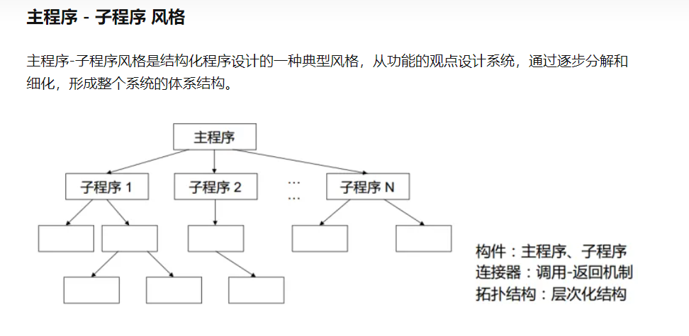
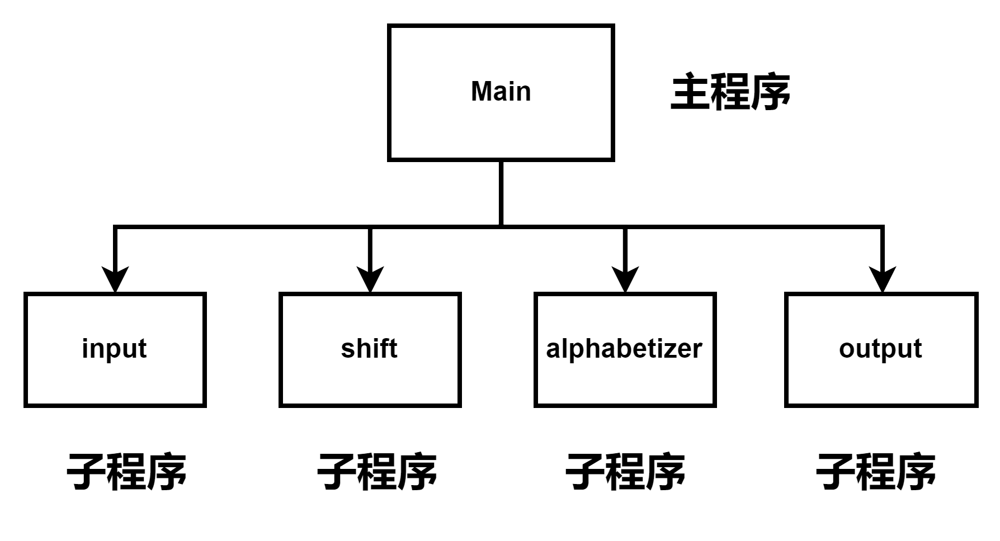
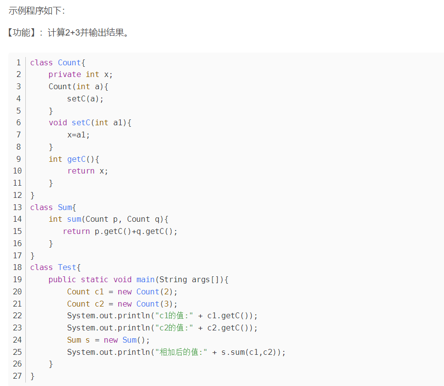
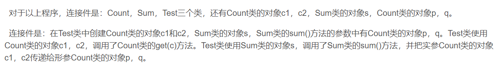
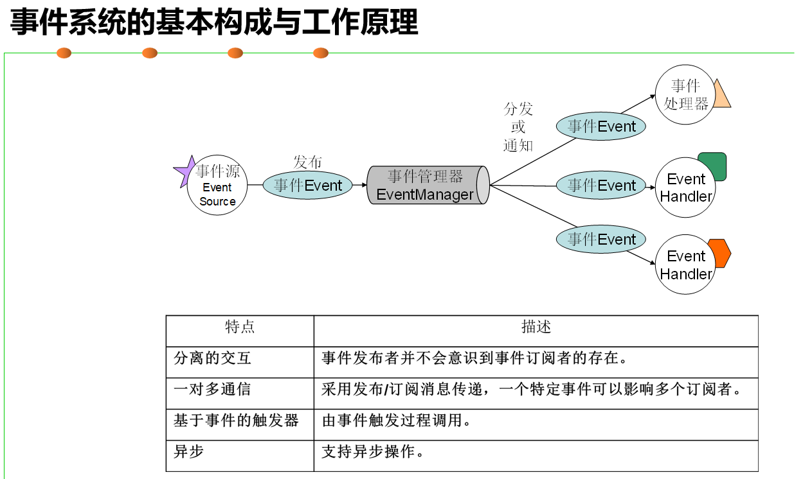
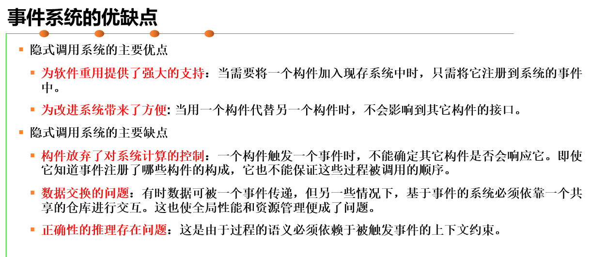

软件体系结构中主程序—子程序体系结构是较简单的结构，其组件是主程序和子程序，连接件是调用返回机制。
 实例代码如下
import java.io.BufferedReader;
import java.io.FileReader;
import java.io.IOException;
import java.util.ArrayList;
import java.util.Collections;
import java.util.Comparator;
import java.util.Iterator;
import java.util.StringTokenizer;
import com.example.demo.result.Result;
public class KWIC {
private static ArrayList kwicList = new ArrayList();
private static ArrayList lineTxt = new ArrayList();
private static BufferedReader inputFile;
public static Result process(){
System.out.println("start processing......");
input("work_project\\demo\\src\\main\\java\\com\\example\\demo\\methods\\method_one\\input.txt");
shift();
alphabetizer();
Result res = output();
System.out.println("result is：\n" + res);
return res;
}
public static void input(String fileName) {
try {
inputFile = new BufferedReader(new FileReader(fileName));
} catch (Exception e) {
e.printStackTrace();
}
String line;
try {
while ((line = inputFile.readLine()) != null) {
lineTxt.add(line);
}
} catch (IOException e) {
e.printStackTrace();
}
}
public static Result output(){
String res = "";
Iterator it = kwicList.iterator();
while (it.hasNext()) {
res += it.next() + "\n";
}
return Result.success(res);
}
public static void shift() {
Iterator it = lineTxt.iterator();
while (it.hasNext()) {
StringTokenizer token = new StringTokenizer(it.next());
ArrayList tokens = new ArrayList();
int i = 0;
int count = token.countTokens();
while (i < count) {
tokens.add(token.nextToken());
i++;
}
for (i = 0; i < count; i++) {
StringBuffer lineBuffer = new StringBuffer();
int index = i;
for (int f = 0; f < count; f++) {
if (index >= count)
index = 0;
lineBuffer.append(tokens.get(index));
lineBuffer.append(" ");
index++;
}
String tmp = lineBuffer.toString();
kwicList.add(tmp);
}
}
}
public static void alphabetizer() {
Collections.sort(kwicList, new AlphabetizerComparator());
}
private static class AlphabetizerComparator implements Comparator {
@Override
public int compare(String o1, String o2) {
if (o1 == null && o2 == null) {
throw new NullPointerException();
}
int compareValue = 0;
char o1c = o1.toLowerCase().charAt(0);
char o2c = o2.toLowerCase().charAt(0);
compareValue = o1c - o2c;
return compareValue;
}
}
}
面向对象×体系结构风格的组件是类和对象。
连接件是对象之间通过功能与函数调用实现交互。对象是通过函数和过程的调用-返回机制来交互的，而类是通过定义对象，再采用调用-返回机制进行交互。
 事件:能够激活对象功能的动作，当发生动作后会给所涉及对象发送一条消息，对象便可执行相应的功能。
事件系统主要分为隐式调用和显示调用两种
隐式调用:
1.事件的触发者不知道那些构件会被影响，相互独立 2.不能假设构件的处理顺序，甚至不知道哪些构件或过程会被调用 3.在整个系统中，各个构件之间无联系，各自独立，通过对事件的发布和注册实现关联
 